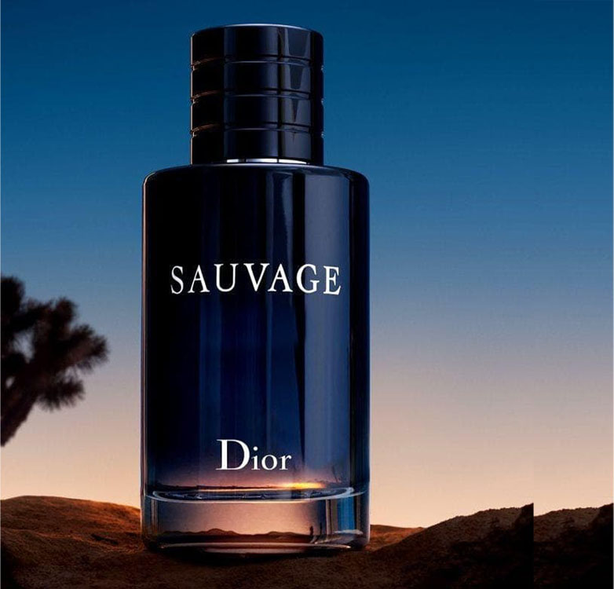

Perfumes
Importados, by FranceSauvage é um ato de criação inspirado em espaços abertos. Um céu azul com ozônio que domina uma paisagem rochosa branca e quente. Uma composição ousada para um homem autêntico.
Topo: Pimenta e Bergamota da Calábria.
Corpo: Gerânio, Lavanda, Pimenta de Szechuan, Elemi, Pimenta rosa, Vetiver e Patchouli.
Fundo: Cedro, Ládano e Ambroxan.
Sauvage Eau de Toilette é o perfume masculino de Dior com um frescor radical, representado por um nome que, por si só, soa como um manifesto selvagem.
François Demachy, Perfumista-Criador de Dior, o quis assim: robusto e nobre ao mesmo tempo.
Sauvage Dior ETD é Fresco e Rústico sendo o mais vendido, o mais usado, o mais elogiado devido ao seu equilibrio de notas e versatalidade.
- Nome: Sauvage
- Marca: Dior
- Tipo: Aromático Fresco
- País: França
- Data Lancamento: 2015
Sauvage é um perfume com quatro concetrações e tipos, que se enquadrão em cada gosto, mantendo sua essencia e caracteristicas que são incomparaveis e unicas hoje no mercado
Não passe despercebido, onde quer que vá, um cheiro excepcional, poderoso, com uma otima fixação, projeção e uma grande qualidade o tornando singular